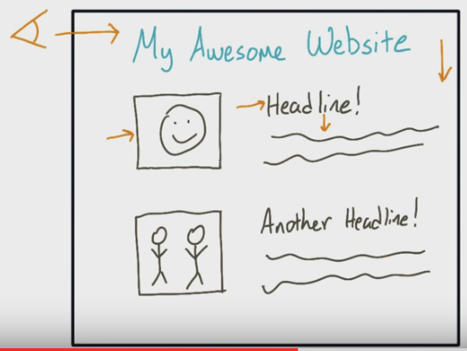

Now, I know you're gagging to know about Grid-Based Design. That is a method of composing a page that appeals to the way a user naturally reads: they start at top-left of the page, then down, then they read from the left of the page, going across and down again. Websites typically take this natural flow into account, ensuring that readers enjoy looking at the site and will stay on it and view the content, which is the whole point, right? For an illustration, see below:

Now if you think grids are exciting, you may just explode when I talk about responsive webpages. We've all got smartphones and tablets, and I'm sure we've all visited a fair few half-arsed mobile sites (*coughfacebookcough*). Well the great thing is that they don't even need to exist! With 'media queries' in your CSS, you can build one page that automagically responds to whatever device or screensize you're using without needing a separate page for mobiles at all! Neat eh? Here are some great examples. On that last one, check how the heading moves from vertical to horizontal - I love that!.
Perhaps less exciting than responsive layout but just as important, is semantic structure. You see, it's not just machines that have gotta read your code. Other people do too. YOU do too. Semantic structure is about using the right tags in a logical, readable way that makes sense to any human reading it. It's also a somewhat controversial topic - people just can't quite seem to agree on how nit-picky we should be about this stuff.
In addition to the awesome stuff mentioned above, I got a fair bit out of the second lesson. I learned about using the overflow attribute to stop your text spilling out of a box, and about tools like placehold.it and Google Fonts. Those are gonna be super useful in the weeks to come!